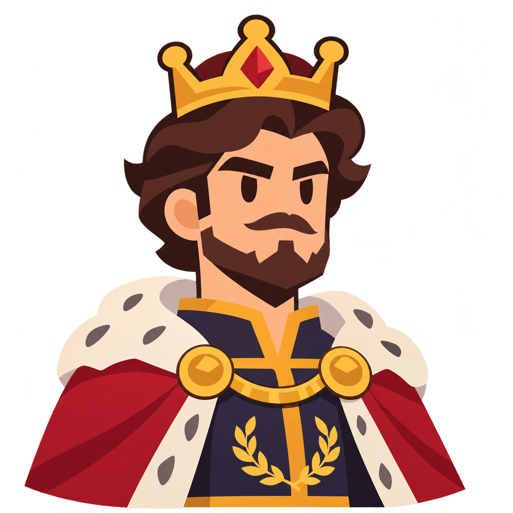
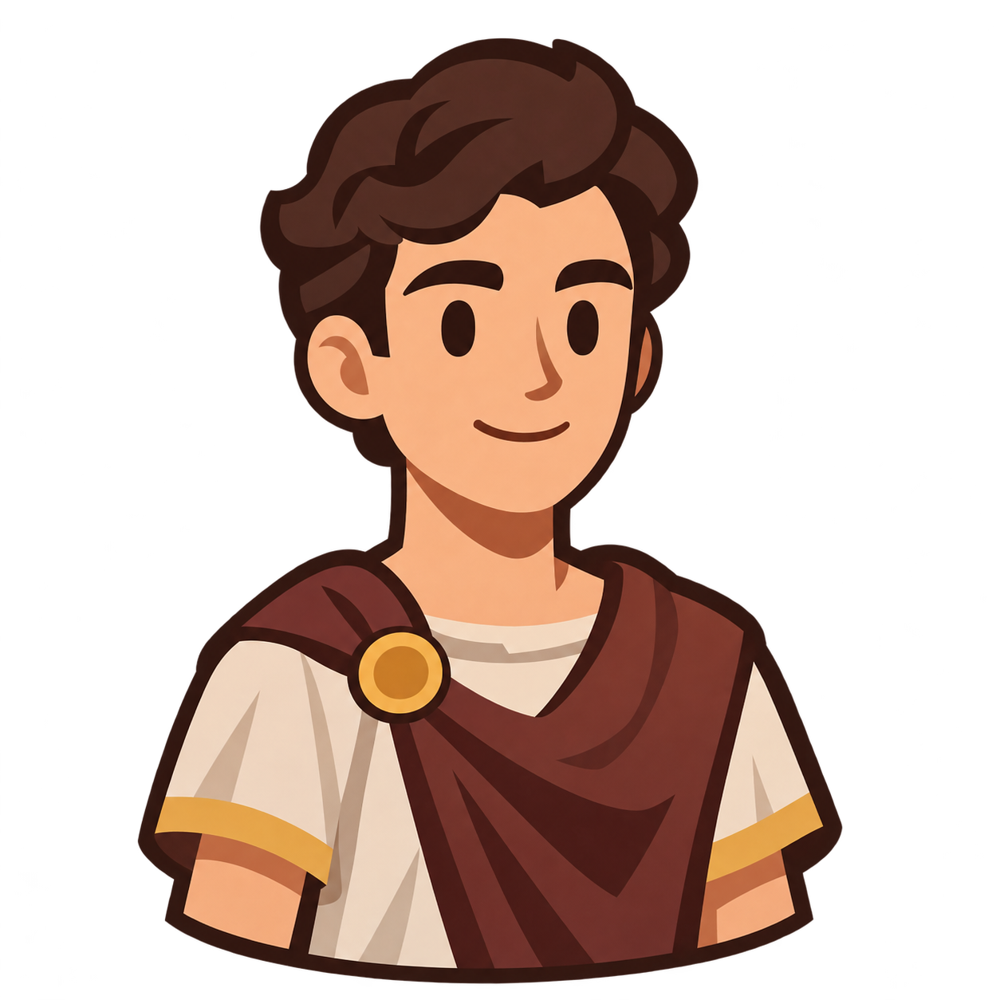
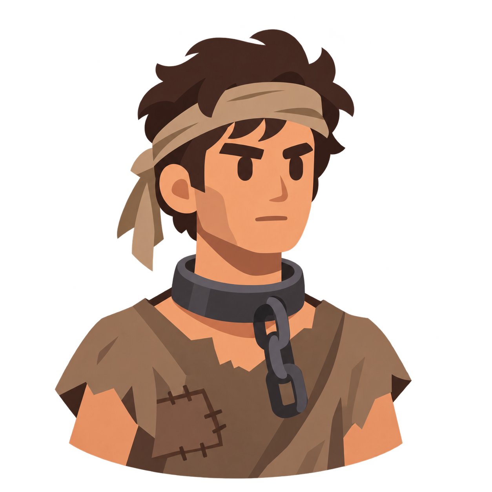

Empereur, Citoyen, Esclave
Affrontez l'ordinateur dans un jeu de stratégie de 12 manches. Choisissez vos cartes, remportez des duels et marquez le maximum de points !
Jouer maintenantRègles du jeu
Chaque carte possède une force et une faiblesse. Découvrez les règles pour remporter vos duels.

Empereur
L'Empereur bat le Citoyen, mais perd contre l'Esclave.

Citoyen
Le Citoyen bat l'Esclave, mais perd contre l'Empereur.

Esclave
L'Esclave bat l'Empereur, mais perd contre le Citoyen.
Si deux Citoyens s'affrontent, le duel se termine par une égalité.
Système de points
Les points dépendent du camp avec lequel vous gagnez la manche.
Camp de l'Empereur
+1 point
Chaque manche gagnée dans ce camp rapporte 1 point.
Camp de l'Esclave
+5 points
Chaque manche gagnée dans ce camp rapporte 5 points.
Gagner dans le camp de l'Esclave est plus difficile, c'est pourquoi la victoire rapporte davantage de points.
Comment jouer ?
Suivez ces étapes pour commencer votre partie.
Choisissez votre joueur
Créez un profil ou sélectionnez un joueur existant avant de commencer une partie.
Jouez vos cartes
Choisissez une carte parmi vos 5 cartes. L'ordinateur choisit la sienne au hasard. En cas d'égalité, le duel continue avec les cartes restantes.
Changez de camp
La partie comporte 12 manches. Vous commencez dans le camp de l'Empereur, puis les camps changent après les manches 3, 6 et 9.
Remportez la partie
Accumulez le maximum de points pendant les 12 manches. Le joueur avec le score le plus élevé remporte la partie !